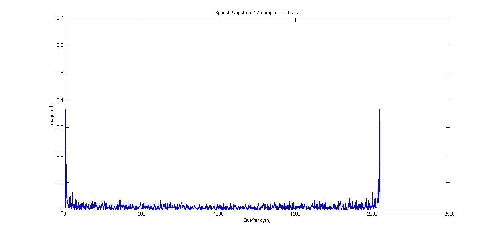
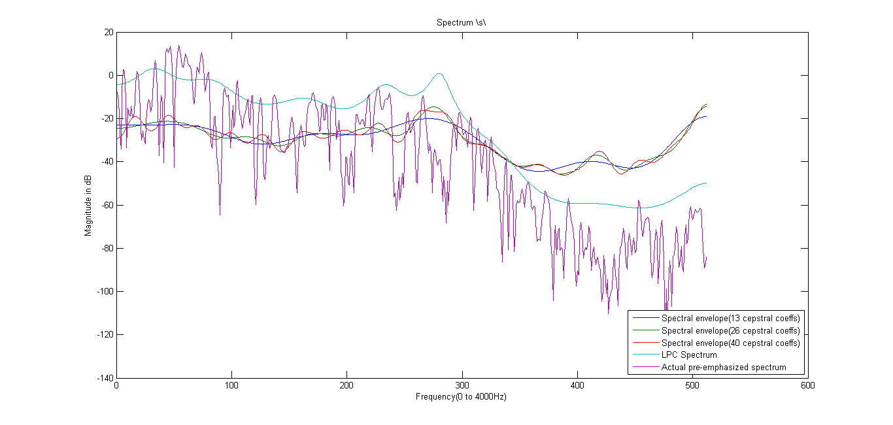

Sa = wavread('s16.wav');
Ls = length(Sa);
Sa(1:1:Ls/2) = Sa(1:2:Ls);
S = zeros(Ls,1);
Lw = 0.03 * 16000;
w = hamming(Lw);
S(1) = Sa(1);
S(2:end) = Sa(2:end) - 0.975*Sa(1:end-1);
pre_em_Spec_s = abs(fft(S(1:Lw).*w, 1024));
N = 1024;
c_s = realcepstrum(Sa,2048);
figure(1)
plot(abs(c_s))
title('Speech Cepstrum \s\ sampled at 16kHz')
xlabel('Quefrency(n)')
ylabel('magnitude')
filter = zeros(N,1);
filter(1:13) = 1;
c_s_filt13 = real(fft(c_s(1:N).*filter));
filter(1:26) = 1;
c_s_filt26 = real(fft(c_s(1:N).*filter));
filter(1:40) = 1;
c_s_filt40 = real(fft(c_s(1:N).*filter));
Sw = zeros(Lw,1);
strt = floor(Ls/2-Lw/2);
Sw(1:end) = S(strt:strt+Lw-1).*w;
spect_a = mag2db(abs(fft(Sw, 1024)));
p = 20;
r=zeros(p+1, 1);
for i=0:p,
r(i+1) = Sw(1:Lw-i)'*Sw(i+1:Lw);
end
[a18 e18] = levinson(r, 18);
a = a18;
e = e18;
LPPspec_s = zeros(N,1);
for k=0:N-1,
w1 = k/1024 * 2 * pi;
expo = exp(-(0:18)*1i*w1);
LPPspec_s(k+1) = e/(abs(expo*a')).^2;
end
LPPspec_s = sqrt(LPPspec_s);
figure(2)
plot((1:1:N/2),[20*c_s_filt13(N/2+1:N)-20, 20*c_s_filt26(N/2+1:N)-20, 20*c_s_filt40(N/2+1:N)-20, 20*log(LPPspec_s(N/2+1:N)), 20*log(pre_em_Spec_s(N/2+1:N))])
legend({'Spectral envelope(13 cepstral coeffs)', 'Spectral envelope(26 cepstral coeffs)', 'Spectral envelope(40 cepstral coeffs)', 'LPC Spectrum', 'Actual pre-emphasized spectrum'}, 'Location', 'SouthEast')
title('Spectrum \s\')
xlabel('Frequency(0 to 4000Hz)')
ylabel('Magnitude in dB')
Warning: Unable to interpret TeX string "Speech Cepstrum \s\ sampled at 16kHz"
 